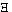

HOME
TOP
UP
PREV
NEXT
GERMAN
MAP
Tractatus Logico-Philosophicus 5.441
- 5.441
-
This disappearance of the apparent logical
constants also occurs if
"~(x) . ~fx" says the same as
"(x) . fx", or
"(x) . fx . x=a" the same as
"fa".
HOME
TOP
UP
PREV
NEXT
GERMAN
MAP
Tractatus Logico-Philosophicus 5.441